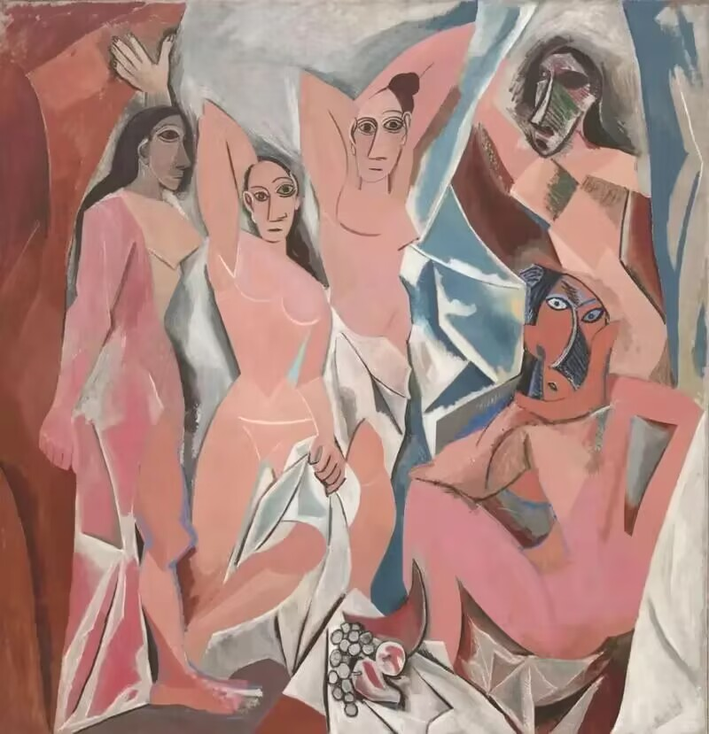
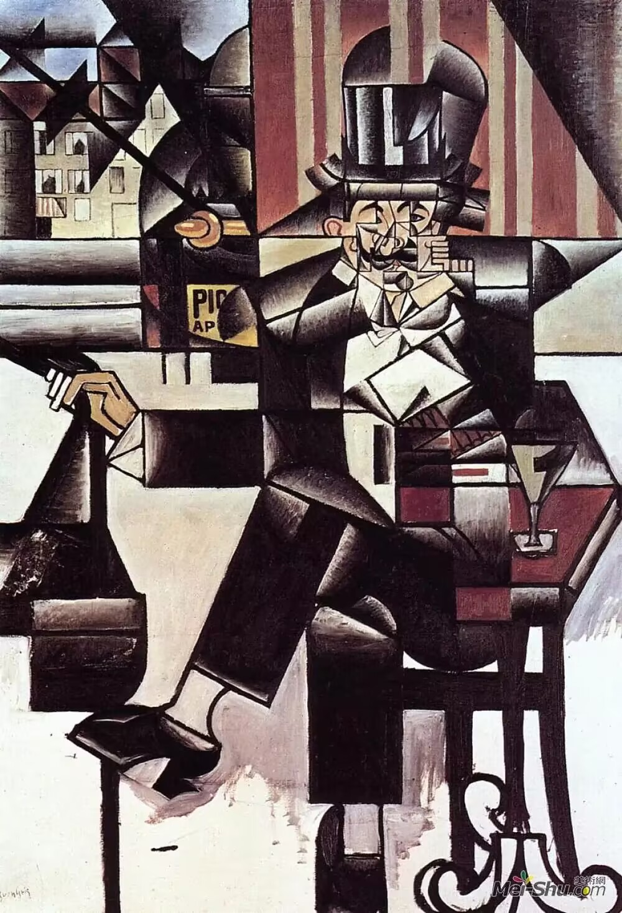

立体主义出现背景：
立体主义是20世纪初在法国兴起的一种革命性的艺术运动，由巴勃罗・毕加索和乔治・布拉克共同创立。19世纪末至20世纪初，艺术家们开始寻求新的艺术表达方式，以突破传统绘画的局限，立体主义正是在这种背景下应运而生。
代表作品：
| 画作 | 名称 | 作者 | 背景 |
|---|---|---|---|
|  | 《亚威农少女》 | 巴勃罗・毕加索 | 《亚威农少女》的创作灵感来源于伊比利亚雕塑和非洲面具，毕加索从非洲土著人艺术中汲取灵感，特别是黑人雕刻的简练朴素、怪异和粗犷的造型。画中少女们变了形的脸，是画家探索伊比利亚人和非洲黑人雕塑的结果。这幅画抛弃了透视法，转而使用平板的原始主义画法，被认为是后来的立体主义与现代艺术的发端之一。 |
| 《埃斯塔克的房子》 | 乔治・布拉克 | 1908年，布拉克来到埃斯塔克。那儿是塞尚晚期曾画出许多风景画的地方。在那里，布拉克开始通过风景画来探索自然外貌背后的几何形式。其《埃斯塔克的房子》，便是当时的一件典型作品。在这幅画中，房子和树木皆被简化为几何形。这种表现手法显然来源于塞尚。塞尚把大自然的各种形体归纳为圆柱体、锥体和球体，布拉克则更加进一步地追求这种对自然物象的几何化表现。他以独特的方法压缩画面的空间深度，使画中的房子看起来好似压偏了的纸盒，而介于平面与立体的效果之间。景物在画中的排列并非前后叠加，而是自上而下地推展，这样，使一些物象一直达到画面的顶端。画中的所有景物，无论是最深远的还是最前景的，都以同样的清晰度展现于画面。由于布拉克作此画的那个阶段，画风明显流露出塞尚的影响，因而，这一阶段又被称作“塞尚式立体主义时期”。 | |
| 《格尔尼卡》 | 巴勃罗・毕加索 | 此画结合立体主义、超现实主义风格，表现痛苦、受难和兽性：画中右边有一个妇女举手从着火的屋上掉下来，另一个妇女拖着畸形的腿冲向画中心；左边一个母亲抱着她已死的孩子；地上有一个战士的尸体，他一只断了的手上握着断剑，剑旁是一朵正在生长着的鲜花。画面以站立仰首的牛和嘶吼的马为构图中心。画家把具象的手法与立体主义的手法相结合，并借助几何线的组合，使作品获得严密的内在结构紧密联系的形式，以激动人心的形象艺术语言，控诉了法西斯战争惨无人道的暴行。 | |
| 《三个女子》 | 斐迪南・莱热 | 这幅画中表现的是共处一室的三个女子，他们集中在室内沙发的周围，或坐或卧，有着类似的、非常平静的表情。一只蜷成一团的黑猫也在这一行列中。沙发前红色小矮桌上放着的食物与花瓶，她们手上端着的咖啡以及摊放在膝头的书似乎都在说着，这是一个悠闲的日子。 画家对工业社会中机械的强烈感受在画面中转化成各种几何形体和规则的线条，然后又把这些机械的构成形象带入了人的世界。室内的陈设以及人体形象都以规则的圆柱、长方、菱形等形体和垂直、水平、曲、折线等因素来加以表现。这些由粗壮线条，间接形体构成的画面充满秩序化的，工整的形式美感。而色彩，更是用了单纯的对比色，平涂的黑、白、黄、红、绿等色彩交错穿插，它们与规则的形体和线条相互作用，增强了画面的节奏和韵律感。 |
|
|  | 《咖啡厅中的男人》 | 胡安・格里斯 | 格里斯是通过几何简化将对象概括为几何色彩形式的组合，在对这种几何形式精确描绘的基础上，用一套数学系统对画面的几何要素进行移动和错位。可以看到在经过位移处理后的画面空间中，他对每一个局部图像碎片描绘的精确程度都是相同的。特别是在这幅作品的面部区域，有一种各个“组件”正处于”变形“过程中的感觉。 |
在分析立体主义阶段，艺术家们专注于分析和分解形式；而在合成立体主义阶段，他们开始将这些分解的元素重新组合，创造出新的构图。